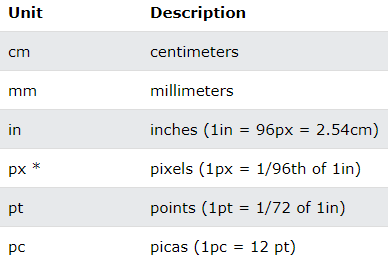
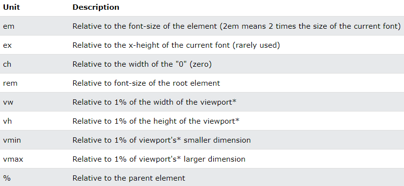

CSS Measurement Types
CSS supports a number of measurements including absolute units such as inches, centimeters, points, and so on, as well as relative measures such as percentages and em units.
You need these values while specifying various measurements in your Style.
Absolute Lengths
-
The absolute length units are fixed and a length expressed in any of these will appear as exactly that size.
-
Absolute length units are not recommended for use on screen, because screen sizes vary so much. However, they can be used if the output medium is known, such as for print layout.

* Pixels (px) are relative to the viewing device. For low-dpi devices, 1px is one device pixel (dot) of the display. For printers and high resolution screens 1px implies multiple device pixels.
Relative Lengths
- Relative length units specify a length relative to another length property. Relative length units scale better between different rendering medium.

- The em and rem units are practical in creating perfectly scalable layout!
- * Viewport = the browser window size. If the viewport is 50cm wide, 1vw = 0.5cm.